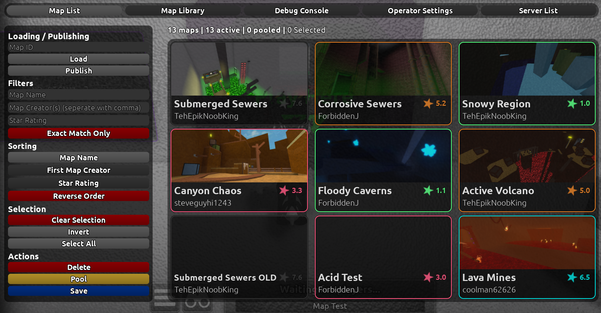

FI Map Test Place
This page will guide you on how to navigate the Map Test Place's UI.
Flood Insanity Map Test PlaceMultiplayer Servers
When first joining the Map Test Place, you will be in a Singleplayer server. In order to go to a Multiplayer server, you have two options:
- Private Servers
- The Server system
Private Servers are a good and very fast way of making a multiplayer server. However, it only allows players on the Owner's friend list, making it limiting for certain events.
The Server system allows players to create multiplayer servers and share them via a code, allowing for less limiting events of up to 50 players.
Map Test Panel
The Panel is the main way of interacting with the place. It allows for loading, removing, publishing and searching of maps, as well as creation of multiplayer servers, debug and fun options, and more! It's the main hub of the game, intergrated in the main menu.

Map List
The Map list is the place to find all of the maps that are currently loaded in the game, remove or save maps, or publish your own maps for people to play.